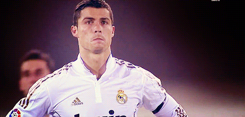

Cristiano Ronaldo
Cristiano Ronaldo dos Santos Aveiro, más conocido como Cristiano Ronaldo o CR7,
es un futbolista portugués que juega como delantero en el Manchester United Football Club de la Premier League de Inglaterra y en la selección de Portugal,
de la cual es su capitán y máximo goleador histórico. Identificado habitualmente en los medios de comunicación con el numerónimo CR7,
es considerado con frecuencia el mejor y más completo futbolista y goleador del mundo y uno de los mejores de todos los tiempos,
por un elevado número de personas y prensa vinculadas al deporte, así como también una de las figuras más mediáticas de su generación.
Es, con 813 goles, el máximo goleador en la historia del fútbol profesional, y con 450 goles, es uno de los maximos goliadores.
